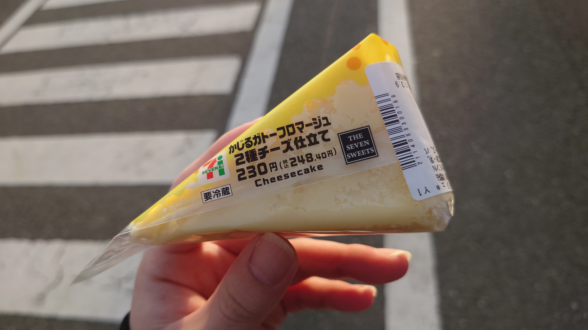

こんにちは、ザクザク食感です。
大風邪を引いた。
頭痛、発熱、倦怠感、吐き気、めまい、鼻水、咳、腹痛、関節痛……（喉だけが痛くない）、考えられる全ての体調不良になった。
風邪の引き始めは熱が高すぎて意識が朦朧としていて、会社のオンライン会議に入ったと思っていたら意識を失って僕だけが会議に取り残された状態で目が覚めたりした。
そんな状態だったので携帯を見ることもご飯を食べることもできず、気絶したり意識を取り戻したりするのを繰り返していた。
体調が悪くなる直前、京都から友達が家に泊まりに来た。
この友人は以前京都に行った記事（パクパク食感のグルメレース）のときの友達で、マブダチだと僕は思っている。
日曜日に秋葉原でシャドウバースのイベントがあり、僕とその友達はシャドバに人生を乗っ取られているので、行くしかないということで夜行バスで京都から僕の家まで来てくれた。
その友達は極度のコミュ障で人嫌いでインドア派だけど、珍しく「服が買いたい」というので原宿に行って服を買ったり、回転寿司で相手が食べる皿だけをお互いに注文しあってどれだけ楽しむことができるか試したりして、かなりアクティブな遊び方ができてめちゃくちゃ楽しかった。
シャドバのイベントもすごい盛り上がりで、数年ぶりのシャドバでめちゃくちゃテンションが上がった。紙シャドバのパックを買ってサイゼで剥いたりもした。
学生の頃お金があったらやりたかったことをたくさんできた。本当に幸せだった。
で、それから帰って寝て起きたら前述のような大体調不良になった。多分サイゼでピザを手で食べたせいだと思う。
これは罰だと思った。僕は幸せになりすぎてしまったんだ。
だってここ最近のザクザク食感はおかしい、本を出すだの、フォロワーと遊ぶだの、死にたいなんて全然言わなくなったし、そもそもツイート数も少ない。土日はほぼリアルの友達との予定が入っていて、平日は週3回ジムに通っている（←！？wwww）。
健常に成ってしまったんだ！！！！！いや、健常を気取ってそれを鼻にかけるように丸いツイートしかしなくなったんだ！！！！！！！
つまらないつまらないつまらないつまらない死ね死ね死ね死ね死ね死ね死ね死ね死ね！！！！！
熱が酷くて画面が見られない間、脳にいるのは僕だけなので、こういう思考がずっと僕に向けて話し続けていた。
もう疲れた……でも僕の言うことはもっともだと思う。今の僕を見て何が面白いんだと思うし、幸せになって普通の生活を送る資格があるとは思えなすぎる。あんなにヘラって人に迷惑かけたのに！！！！！
風邪の真っ只中だったが、美容室の予約をしてしまっていたので行った（このときは咳が出ていなかったので許して下さい）。
意識が途切れないように気合を入れて風呂に入って、綺麗な服に着替えて、数日ぶりに外に出た。
フラフラで自転車を漕ぎながら美容室に向かった。温かい……！日の光のおかげか家より温かい。視界がぼやけて、夕焼けが綺麗で、自転車も真っ直ぐ進めないから雲の上にいるみたいだった。
天国にいるみたいな気分で美容室に行ったのはいいけど、髪を切ってもらっている間は普通にきつかった。
体調が悪そうにしていたら帰されてしまいそうなので、なるべく平静を装って、鼻水もなるべくかまないようにして、頭痛やダルさに耐えて美容師と会話していた。
本当にきつかった……しんどいのに元気なふりをして話すのってめちゃくちゃきついんだった
鬱のまま会社で話しているときのことを思い出した。健常になった今、病気なのに健常のふりをする感覚がすごく気持ち悪かった。罰だ！！！これは罰なんだ！！！！！
美容院を抜けた後、コンビニに向かった。
幼少期、風邪で学校を休んで母親に病院に連れて行ってもらった後、コンビニでお菓子を買ってもらえたのを思い出した。
一人暮らしになった今、病気になっても病院に連れて行ってくれる人はいないし、ご飯がなくなっても自分で買わなくちゃいけないしお菓子なんて誰も買ってくれない。(でもフォロワーから「何か手伝えることある！？」と連絡が来て、ほんまにありがとうございます；；)
自分で買うなら～と思って、当時よく買ってもらっていたセブンのチーズケーキを買った。

何の味もしなかった。やっぱり罰なんだ、俺はここで死にます。
それでは、さようなら。